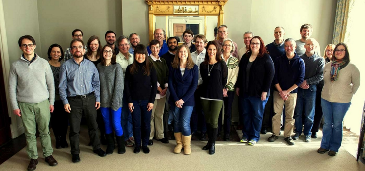

| ← Publications Home |
| Benefits of Publishing with AMS |
| Publications Commission Reports |
| Our Copyright Policy |
| Contacts |
|  |
Top Editors and Professional StaffThe editorial board of each AMS journal is made up of the top scientists in the fields covered by that journal, who oversee the stringent peer-review process for every article published. The professional AMS journals peer-review and production support staff, and the AMS Books staff, are committed to helping authors throughout the publication process to ensure their publishing experience is smooth, efficient, and friendly. |